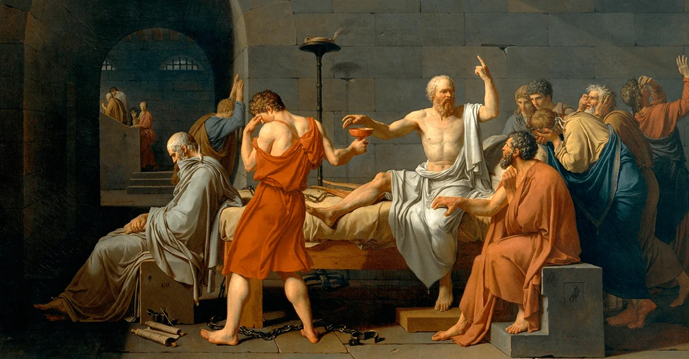
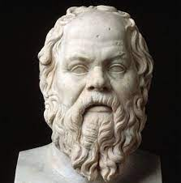
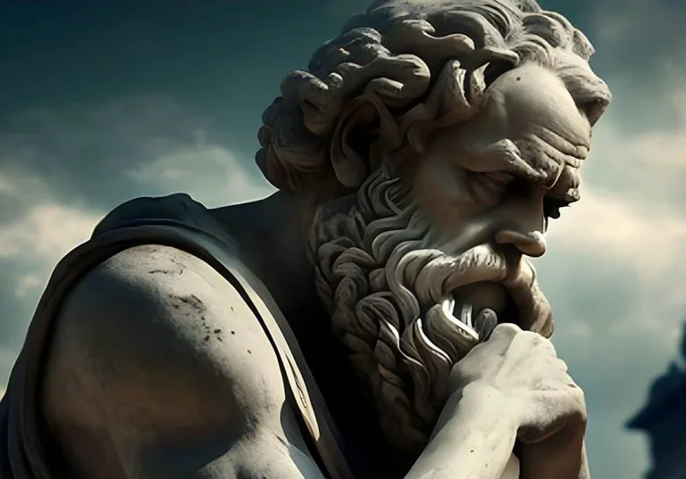
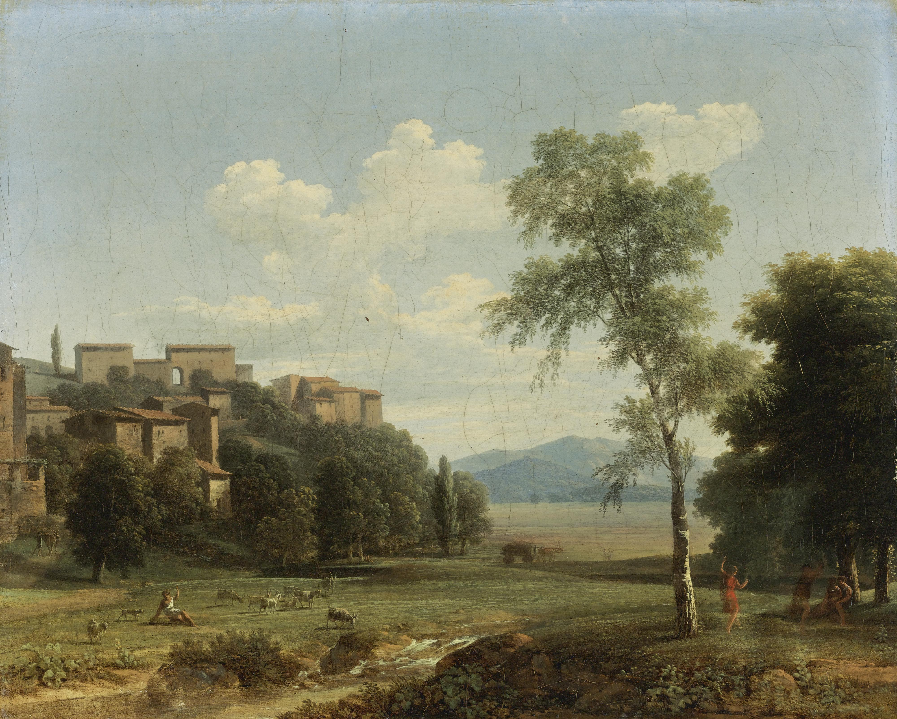
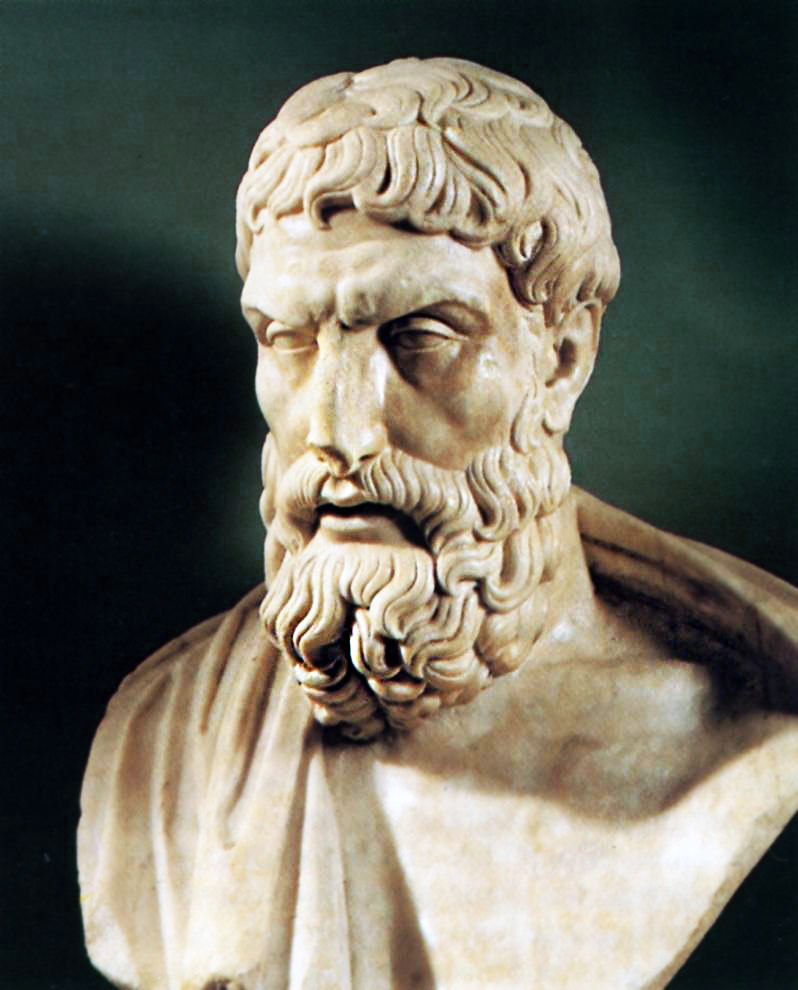
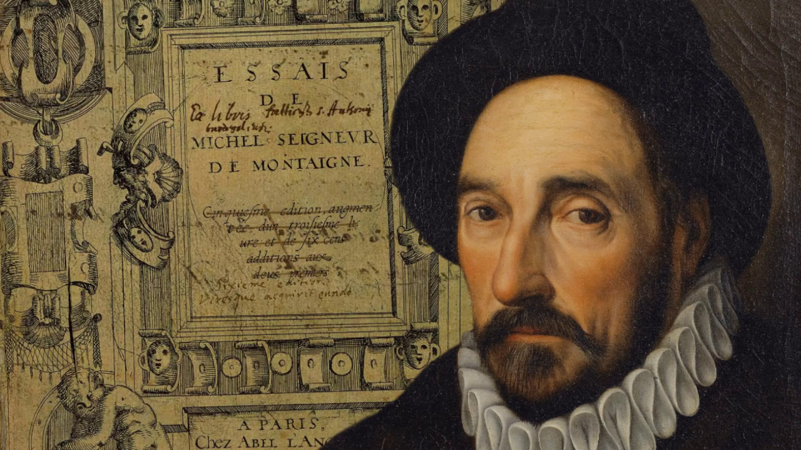
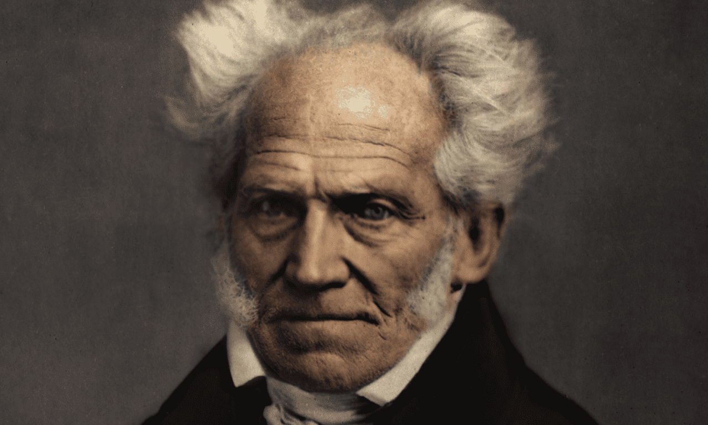
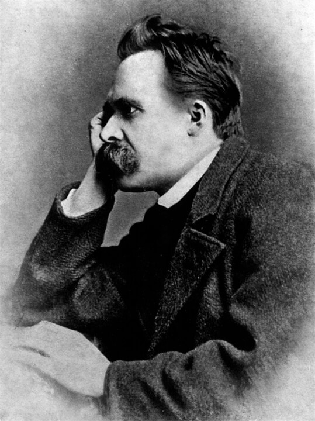

A morte é um tema central na filosofia que tem intrigado os pensadores ao longo da história da humanidade. Ela representa uma das questões mais fundamentais e existenciais da nossa existência, levando a debates profundos sobre sua natureza, significado e consequências. Na filosofia, a morte é explorada de diversas maneiras, desde perspectivas metafísicas até questões éticas e existenciais. Para muitos filósofos, a morte é vista como uma parte inevitável da condição humana. Ela marca o fim da vida individual e levanta questões sobre o que acontece após a morte, se há algum tipo de continuidade da existência ou se a morte é o fim absoluto. Além disso, a morte também levanta questões sobre a finitude da vida e como isso influencia nossas escolhas e ações. Desde os tempos antigos, pensadores como Sócrates, Platão e Epicuro abordaram a morte em suas obras, oferecendo diferentes perspectivas sobre como encará-la. Alguns acreditavam na imortalidade da alma, enquanto outros defendiam a ideia de que a morte é simplesmente o fim da consciência. Essas visões variadas continuaram a ser debatidas ao longo da história da filosofia. A seguir veremos o pensamento de alguns destes filósofos.

Sócrates, o famoso filósofo grego que viveu por volta do século V a.C., deixou um legado filosófico significativo, mas não escreveu suas próprias obras. Portanto, o que sabemos sobre suas crenças e pensamentos é principalmente baseado nos diálogos escritos por seu discípulo, Platão. Embora não haja um diálogo específico de Platão que trate diretamente das opiniões de Sócrates sobre a morte, podemos inferir algumas ideias com base em seus ensinamentos
gerais e em relatos de suas palavras. Uma das crenças fundamentais de Sócrates era a ideia de que a filosofia era um exercício de preparação para a morte. Ele argumentava que a busca do conhecimento e da sabedoria era uma forma de purificação da alma, preparando-a para a vida após a morte. Embora Sócrates não tenha detalhado uma visão específica do que aconteceria após a morte, ele parecia acreditar na imortalidade da alma. Em alguns diálogos de Platão, como o "Fédon", Sócrates sugere que a alma é eterna e que a morte é a separação do corpo, permitindo que a alma continue a
existir em outro estado. Sócrates também é conhecido por sua serenidade e coragem diante da morte. No diálogo "Fédon", ele aceita sua sentença de morte por envenenamento com calma e resignação, argumentando que a morte não deve ser temida, pois é uma libertação da prisão do corpo e uma oportunidade de alcançar um estado de sabedoria superior. Ele acreditava que a vida virtuosa era a preparação adequada para a morte e que uma vida bem vivida deveria ser um motivo de esperança, não de medo, quando se enfrenta a morte. “Morrer é uma destas duas coisas: ou o morto é igual a nada, e não sente nenhuma sensação de coisa nenhuma; ou, então, como se costuma dizer, trata-se duma mudança, uma emigração da alma, do lugar deste mundo

Filósofo grego

para outro lugar. Se não há nenhuma sensação, se é como um sono em que o adormecido nada vê nem sonha, que maravilhosa vantagem seria a morte!”. Ele acreditava que no mundo físico, a alma frequentemente se perturba e se perde, pois está agora ligada a objetos que são temporários e passageiros. No entanto, quando a alma se volta para dentro de si mesma, redescobre as ideias puras, eternas e imortais que um dia conheceu. Nesse momento, as aflições desaparecem, e é quando o espírito alcança o que chamamos de sabedoria. Daí a importância do autoconhecimento. A morte desempenha um
papel fundamental para Sócrates, pois permite que a alma se afaste novamente da matéria orgânica e, em sua essência, alcance o verdadeiro conhecimento. Somente então o indivíduo se torna livre para alcançar o conhecimento em sua forma mais pura. Sócrates acredita que, por essa razão, os verdadeiros filósofos estão dispostos a enfrentar a morte, pois desejam mais do que qualquer outra coisa conhecer a essência da existência.
Epicuro, filósofo grego que viveu no século IV a.C., tinha uma visão distinta sobre a morte que contrastava com muitas das crenças de sua época. Sua filosofia, conhecida como o Epicurismo, valorizava a busca da tranquilidade e da felicidade (eudaimonia) como o objetivo fundamental da vida. A visão de Epicuro sobre a morte é fundamental para entender sua filosofia e sua ética. Epicuro acreditava que a morte não deveria ser temida, pois, para ele, a morte não trazia sofrimento ou dor para aquele que morria. Ele argumentava que, uma vez que a morte ocorresse, a pessoa deixaria de existir e, portanto, não seria mais capaz de sentir qualquer forma de desconforto, dor ou prazer.

Em suas próprias palavras, "A morte não é nada para nós, porque, quando existimos, a morte não está presente, e quando a morte está presente, não existimos mais." Epicuro também afirmava que a dor e o sofrimento provêm do desejo, especialmente do desejo de evitar a morte ou acreditar em punições após a morte. Ele ensinava que, ao entender a verdadeira natureza da morte e abandonar crenças supersticiosas sobre o pós-morte, poderíamos alcançar uma vida mais tranquila e feliz.

Filósofo grego
“Não existe nada de terrível na vida para quem está convencido que não há nada de terrível em deixar de viver” – Epicuro, Carta sobre a Felicidade (a Meneceu).
Além disso, Epicuro enfatizava a importância de buscar prazeres simples e evitar o excesso. Ele acreditava que a busca do prazer sábio e moderado era o caminho para uma vida feliz. Portanto, para Epicuro, a morte não deveria ser vista como algo a ser temido, pois é apenas a ausência de sensações, e a vida deve ser aproveitada ao máximo dentro dos limites da moderação e da sabedoria. Epicuro via a morte como a cessação da consciência e da sensação, e acreditava que compreender essa natureza da morte poderia nos ajudar a superar o medo dela, buscando uma vida de prazer moderado e sabedoria.
Michel de Montaigne, um dos mais influentes ensaístas do Renascimento francês do século XVI, explorou a questão da morte em vários de seus ensaios. Montaigne tinha uma abordagem pessoal e filosófica única em relação à morte, e suas reflexões são marcadas por um tom cético e humano. Montaigne começou seu famoso ensaio "Que filosofar é aprender a morrer" com a afirmação de que, para ele, a filosofia tinha uma finalidade prática e vital: ensinar as pessoas a enfrentarem a morte de maneira mais serena e corajosa.
argumentava que a morte é uma parte inevitável da vida e que não devemos temê-la, mas sim aprender a aceitá-la como parte de nossa condição humana. Uma das ideias centrais de Montaigne era a incerteza da morte. Ele criticava os filósofos que afirmavam saber o que aconteceria após a morte, argumentando que tal conhecimento era inacessível aos seres humanos. Ele preferia uma abordagem cética e agnóstica, sugerindo que a verdadeira sabedoria estava em reconhecer nossa ignorância sobre o que ocorreria após a morte.

Filósofo francês
Montaigne também discutia como a morte não deveria ser temida, pois é uma parte natural da vida. Ele desafiava a visão da morte como um evento terrível e enfatizava que a vida era efêmera e cheia de incertezas, mas que isso não deveria nos impedir de viver plenamente. Em sua escrita, Montaigne frequentemente fazia referência a experiências pessoais e à sua própria consciência da fragilidade da vida. Ele via a morte como uma oportunidade de refletir sobre o que realmente importava na vida e como viver de forma mais autêntica e significativa. Assim vemos que a visão de Montaigne sobre a morte era profundamente humanista e pragmática. Ele buscava desmistificar a morte, encorajando as pessoas a enfrentarem-na com serenidade e a viverem suas vidas de forma autêntica, reconhecendo a inevitabilidade e a incerteza da morte como parte integrante da experiência humana.
Arthur Schopenhauer, filósofo alemão do século XIX, tinha uma visão profundamente pessimista sobre a vida e, por extensão, sobre a morte. Sua filosofia é conhecida pelo pessimismo e pela ênfase na vontade como a força motriz subjacente à existência humana. A visão de Schopenhauer sobre a morte está intrinsicamente ligada à sua filosofia, na qual a vida é caracterizada pelo sofrimento e pela insatisfação. Para Schopenhauer, a vida era dominada pela "vontade de viver" que incessantemente buscava a satisfação de desejos e necessidades. Ele via a vida como um estado de constante desejo e sofrimento, onde a busca por objetivos e satisfação era fútil, pois mesmo quando alcançados, novos desejos logo surgiriam. Portanto, a morte, para Schopenhauer, era vista como um alívio do sofrimento inerente à vida. Schopenhauer via a morte como a extinção da vontade, o fim do desejo e do sofrimento. Em sua visão, a morte

Filósofo alemão
representava uma espécie de "não ser", onde a individualidade se dissolvia e a vontade de viver deixaria de existir. O principal trabalho de Schopenhauer, O mundo como vontade e representação, por vezes usa o ato suicida em seus exemplos. Ele negou que o suicídio fosse imoral e viu-o como um em direito de tirar a própria vida. Ele comparou a vida a um "pesadelo" e a morte a um "sono tranquilo", sugerindo que a morte era a libertação da angústia e do desejo incessante que caracterizavam a vida.
No entanto, é importante observar que Schopenhauer também acreditava que a vontade de viver era uma força fundamental e cega que continuava a se manifestar em novas formas de vida após a morte de um indivíduo. Portanto, ele não via a morte como uma extinção completa da existência, mas como o fim da individualidade e do sofrimento que a acompanha. Podemos disser que a visão de Schopenhauer sobre a morte estava profundamente enraizada em seu pessimismo filosófico, onde a vida era caracterizada pelo sofrimento e insatisfação. Ele via a morte como uma forma de libertação desse sofrimento, uma dissolução da individualidade e da vontade de viver, embora acreditasse que essa vontade continuasse a se manifestar em outras formas de vida.
Friedrich Nietzsche, filósofo alemão do século XIX, abordou o tema da morte de maneira complexa e multifacetada em sua filosofia. A posição de Nietzsche quanto à morte de si diverge fundamentalmente da tradição herdada da história da filosofia e sua visão sobre a morte não pode ser reduzida a uma única perspectiva, pois evoluiu ao longo de sua obra. No entanto, podemos destacar algumas das ideias-chave que Nietzsche expressou sobre a morte. Nietzsche foi um crítico feroz do dualismo cartesiano, que separa mente e corpo, espiritualidade e materialidade. Ele via a tradição filosófica, especialmente a influência do cristianismo, como tendo uma visão negativa da vida e da morte, na qual a vida é vista como um mero "prólogo da morte". Ele criticou a ideia de que a vida terrena é apenas um teste para uma vida futura após a morte. Em vez disso, Nietzsche defendia a "vontade de potência", uma força vital que impulsiona os indivíduos a buscar a excelência, a criatividade e a realização de suas potencialidades. Ele via a morte como uma
parte natural desse processo, não como o fim absoluto, mas como uma transformação constante. A morte era vista como uma renovação e um retorno à natureza, uma parte fundamental do ciclo da vida. Nietzsche também abordou o conceito de "eterno retorno", uma ideia em que ele propunha que, se um indivíduo tivesse que viver sua vida exatamente da mesma maneira, infinitamente, ele deveria abraçar essa repetição com alegria. Isso implica que cada ação e escolha devem ser feitas de maneira a serem aceitáveis para uma repetição eterna, celebrando a vida e tudo o que ela contém, incluindo a morte. Em resumo, Nietzsche via a morte como parte integrante do ciclo vital e um elemento crucial para a afirmação da vida. Ele buscava afastar-se das visões tradicionais da morte, que consideravam a vida como uma preparação para a morte ou como uma passagem para uma vida futura, e, em vez disso, procurava celebrar a vida terrena e abraçar sua finitude como parte da experiência humana.

Filósofo e filólogo